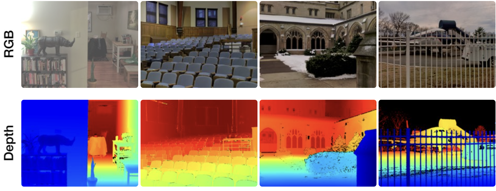
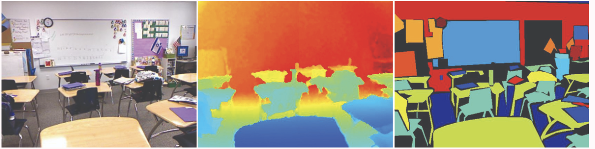
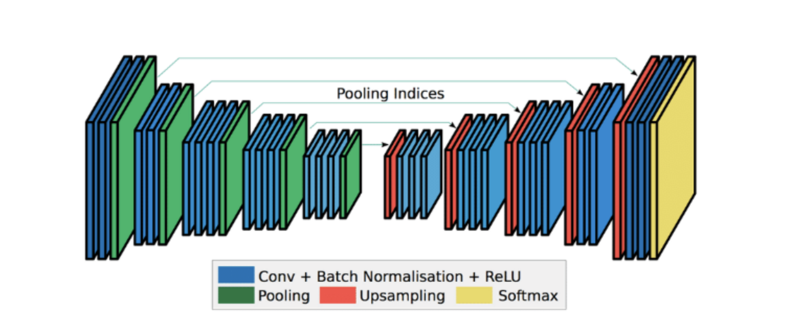
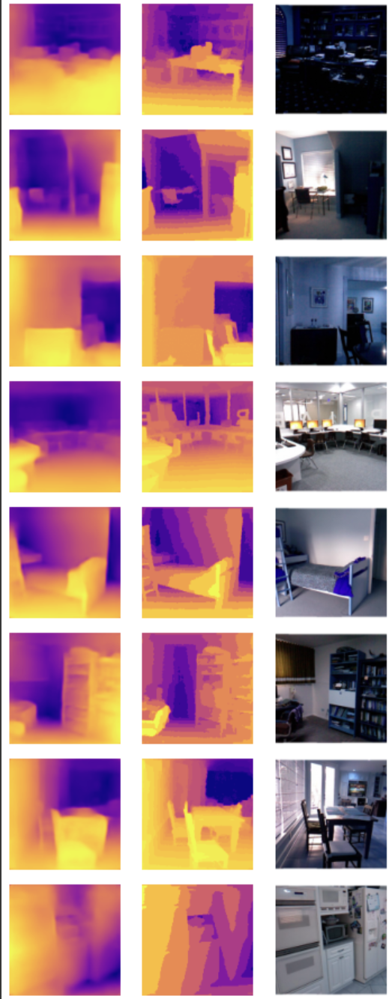
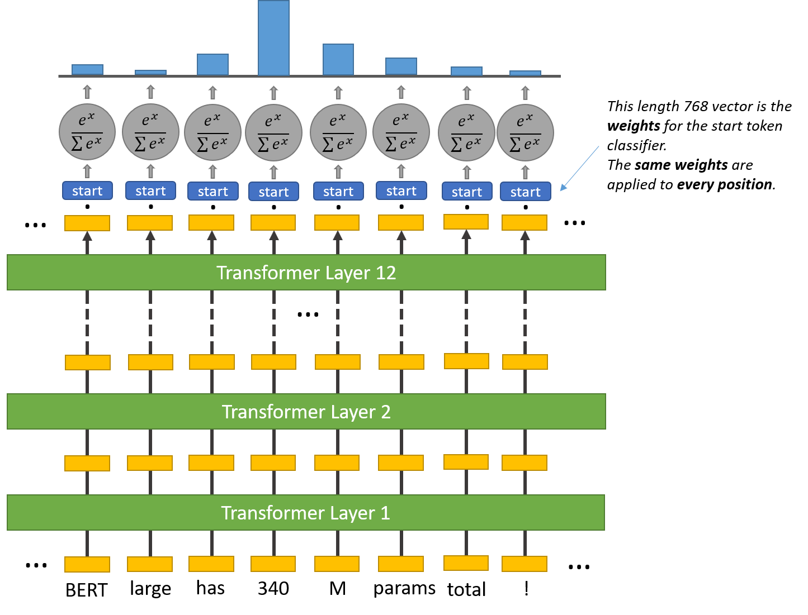
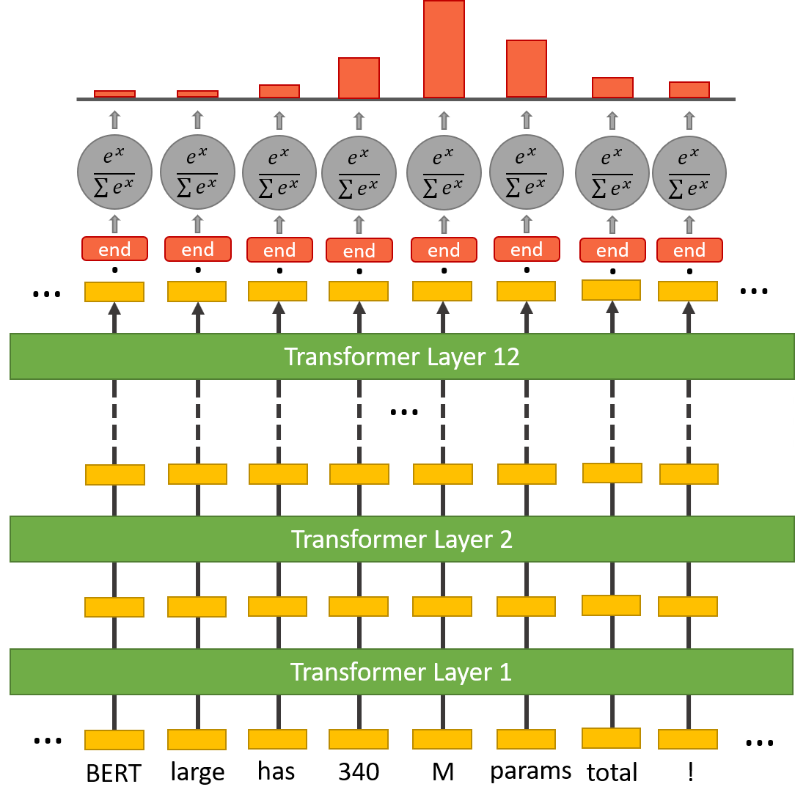

Is AI able to solve problem which humans can't naturally?
There are two datasets that we tried working. Kitti dataset beting too large we thought of just running the testset once we built the model using other datasets. For training validation dataset of the below models were used for now as the actual training datasets are as large as 84gb.
DIODE (Dense Indoor and Outdoor DEpth) is a dataset that contains diverse high-resolution color images with accurate, dense, far-range depth measurements. It is the first public dataset to include RGBD images of indoor and outdoor scenes obtained with one sensor suite. The dataset contains an RGB image and a depth image, where the closer objects have blue color and as it goes back the farthest object has red color.
|  |
We used the labelled dataset of NYU-2 which is close to 2.8GB. It is comprised of pairs of RGB and Depth frames that have been synchronized and annotated with dense labels for every image.
|  |
As part of our initial analysis of the project we implemented a UNet CNN with a ResNet34 encoder which uses weights pre-trained on imagenet. U-Net has two parts an encoder and a decoder. The encoder decoder set up allows us to encode the RGB image and get back the same image but in a different form(depth based colored). U-Net has the ability for pixel-level localization and distinguishes unique patterns. Each block of the decoder is connected to the corresponding block of the encoder using Skip connections. This helps it to have more latent spaces than its traditional counterpart and that said, it uses the information right from the input space and all of its intermediate representations to map the sample onto some well-defined latent space and then computing the output from it. These skip connections are experimentally validated in many pieces of research to solve the degradation problem.
|  |
For our dataset, we used NYU-V2 [2] validation dataset and, split the dataset into train and test. The folder format of the dataset can be seen here [2]. The training set if further split into 70% train and 30% validation datasets. As part of data preprocessing we perform random horizontal flips of the image and normalize the images. We used an image size of 128*128 with 3 RGB channels as input. For hyperparameters, we used 16 batch size, 15 epochs, 0.0001 learning rate.
In the beginning we started to understand the Kitti datasets, because the dataset is built using an autonomous driving platform. But due to the dataset being large we decided to train our model on DIODE dataset. To begin with we ran a trial run on a pre-trained vision transformer to understand how well the depth estimation it was able to do with respect to the ground truth. Thereafter as part of our first steps, we implemented a pipeline to perform the following
| 
|
We can see that for a 15 epoch, using pretrained weights the model does an okay job at least for understanding what is near and what is far. But the model does do a good job at proper segmentation. When there are too many objects in the image the model does not do a good job. We feel self attention and increasing the number of epochs might help improve this. With self-attention the model might undertand what pixels might be related in terms ob the object and the orientation in an image.
We see that the training for a 128*128 vision transformer would require a high computational power, so we are putting a hold on the project for now and trying to get a indepth understanding of Transformers and BERT, and how self-attention has become a game changer. We are planning to utilize BERT to build a Question Answering model trained to answer questions from COVID related research articles.
Question-Answering models are Natural Language Processing Models that can answer questions given some context, and sometimes without any context. Based on how the answer is generated, the task can be classified either as Extractive Question Answering or Generative Question Answering. In Extractive Question Answering, the model extracts the answer from a context and provides it directly to the user. It is usually built with BERT-like models [6].
Lee et. al [7] introduced the BioBERT model where they have adapted the pre-trained language model BERT for biomedical corpora from PubMed and PMC. We are planning to build a QA model utilizing the BioBERT model to explore if pretraining on a medical text corpus provides an edge when answering COVID related questions.
BERT (Bidirectional Encoder Representations from Transformers) [8] is based on Transformers, trained using the Transformer Encoder architecture, with Masked Language Modelling (MLM) and the Next Sentence Prediction (NSP) pre-training objective. It is designed to pre-train deep bidirectional representations from an unlabeled text by jointly conditioning on both the left and right contexts. The pre-trained BERT model can be fine-tuned with an additional output layer to create models for a wide range of NLP tasks.
To perform the QA task we need to add a question-answering head on top of the BERT model to find the start token and end token of an answer for a given paragraph. Inside the question answering head there are two sets of weights, one for the start token and another for the end token. They have the same dimensions as the output embeddings.
The output embedding of every token in the text is fed into this head. A dot product is computed between the start weights and the output embeddings. Then the softmax activation is applied to produce a probability distribution over all of the words.The word with the highest probability is picked as the start token. The same process is repeated for the end token.
| 
|
| 
|
The Question Answering model requires data in the SQuAD (Stanford Question Answering Dataset) format. SQuAD is a reading comprehension dataset, consisting of questions posed by crowdworkers on a set of Wikipedia articles, where the answer to every question is a segment of text from the corresponding reading passage, or the question might be unanswerable.
For our project, we plan to use the COVID-QA [9] dataset built using the CORD-19 [10] dataset. The dataset consists of a collection of work of several Researchers and its analysis. It consists of around 59 thousand papers and around 41 thousand full texts incorporating papers distributed in more than 3200 journals. The COVID-QA dataset has 147 scientific articles mostly related to COVID-19 selecetd from CORD-19 and annotated by experts in SQuAD style fashion where annotators marked text as answers and formulate corresponding questions.
Some example questions-answers in the dataset:
Question: What is the main cause of HIV-1 infection in children?
Answer: Mother-to-child transmission (MTCT) is the main cause of HIV-1 infection in children worldwide
Question: What plays the crucial role in the Mother to Child Transmission of HIV-1 and what increases the risk
Answer: DC-SIGNR plays a crucial role in MTCT of HIV-1 and that impaired placental DC-SIGNR expression increases risk of transmission
We are planning to categorize our dataset based on topics in the text, question semantics etc. We would train both the models by holding off one of the categories.
Case 1: We would hold one of the topics out while training the dataset and test with all the topics to compare the model performances on this unseen topic.
Case 2: We would hold one of question types out while training the dataset and test with all the question types to compare the model performances on this unseen question type.
One of our hypotheses is that the BioBert model would perform better than the other model in case 1. With these experiments we would visualize the performance of the BERT models in the Question-Answering task and also explore how impactful is pre-training with biomedical corpora.
[1] Vision Transformers for Dense Prediction.
[2] https://cs.nyu.edu/~silberman/datasets/nyu_depth_v2.html
[3] https://gitlab.com/AshwinUnnikrishnan/monocular-depth
[4] https://medium.com/mlearning-ai/monocular-depth-estimation-using-u-net-6f149fc34077
[5] https://huggingface.co/Intel/dpt-large
[6] https://huggingface.co/tasks/question-answering
[7] BioBERT: a pre-trained biomedical language representation model for biomedical text mining
[8] BERT: Pre-training of Deep Bidirectional Transformers for Language Understanding
[9] COVID-QA: A Question Answering Dataset for COVID-19
[10] The COVID-19 Open Research Dataset (CORD-19)